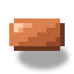
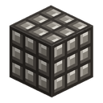

Бочка брожения
alaindustrial:fermenter
Сводка
Бочка брожения — LV-машина, которая перерабатывает органический мусор в топливо. На вход идут органика, вода и EU/FE; на выходе — биотопливо в собственный бак и биомасса в слот результата. Это первое топливо мода, которое выращивают, а не выкачивают из земли: грядка и курятник заменяют нефтяное озеро.
Из двух выходов гарантирован только один. Биотопливо варится всегда, биомасса — по шансу рецепта. Так и задумано: жидкость — то, что брожение даёт неизбежно, а твёрдый остаток — то, что иногда переживает процесс.
Мини-пример: дрон-садовник свозит урожай в сундук, воронка сыплет его в бочку, ведро воды стоит в слоте залива, кабель от солнечной панели идёт в бок. Через пятнадцать секунд в правом баке первые миллилитры биотоплива.
Энергия
Бочка только потребляет EU/FE. Энергию принимают все грани, кроме лицевой (та, куда смотрит модель) — обычный контракт машины мода.
| Что | Значение |
|---|---|
| Роль | потребитель с буфером |
| Внутренний буфер | 800 EU/FE |
| Макс. вход | 32 EU/FE/такт (LV) |
| Макс. выход | н/п (не отдаёт) |
| Потребление | 2 EU/FE/такт |
| Цена операции | 600 EU/FE |
Панель улучшений у бочки есть: ускорители работают на ней по общему правилу — длительность вниз, EU/FE/такт вверх, энергия на операцию растёт.
Жидкость
Два бака по 10 вёдер — вход и выход, и перепутать их нельзя.
| Бак | Объём | Что принимает | Доступ снаружи |
|---|---|---|---|
| Вода (вход) | 10 000 mB | только вода-источник (minecraft:water) | только заливка, с любой грани |
| Биотопливо (выход) | 10 000 mB | наполняет только сама машина | только забор, только с нижней грани |
Асимметрия граней читается без тултипов и делает ошибку невозможной: одна нитка труб не сможет случайно налить воду в выходной бак. Пробный запрос без грани (Jade, WTHIT, чужая труба) отвечает баком воды — это «личная» жидкость машины.
Вода — не часть рецепта, а фиксированная цена машины: 100 mB за партию , одинаково для всех трёх тиров сырья. Вода, попавшая в бак, обратно не выкачивается — это сырьё, а не хранилище.
Процессинг
Тип рецепта —. Одна партия: 300 тиков (15 с) и 600 EU/FE, независимо от того, чем машину кормят. Меняется только то, сколько сырья съедено и сколько получено.
| Тир органики | Тег | Съедает | Биотопливо | Шанс биомассы |
|---|---|---|---|---|
| Дешёвый | 4 шт | 20 mB | 6 % | |
| Обычный | 2 шт | 60 mB | 20 % | |
| Ценный | 1 шт | 150 mB | 50 % |
Дешёвый — садовый мусор: семена, трава и папоротник, листва, саженцы, цветы, лианы и мох, тростник, бамбук, кактус, грибы, гниющая плоть, ядовитый картофель, паучий глаз. Обычный — рядовой урожай и сырьё со двора: пшеница, морковь, картофель, свёкла, тыква, ломтик арбуза, яблоко, ягоды, какао, адский нарост, хлеб, яйца, сырое мясо и рыба, кожа, перья. Ценный — то, что уже переработано или спрессовано: золотая морковь, золотое яблоко, варёные мясо и рыба, печёный картофель, торт, тыквенный пирог, печенье, супы, мёд и соты, стог сена, блок сушёных водорослей, сахар.
Цена операции одна на всех — это инвариант мода: у одного вида рецептов ровно одна цена. Игрок управляет не скоростью, а тем, что кладёт в слот: четыре пучка травы дают 20 mB и одну биомассу на шестнадцать партий, одна золотая морковь — 150 mB и биомассу через раз.
Тир читается по тегу предмета в слоте, а не из рецепта. Причина в устройстве рецептов мода: ни одно семейство не принимает предметы и жидкость одновременно и не выдаёт оба вида выхода сразу. Поэтому жидкая сторона операции принадлежит машине (конфиг), а предметная — рецепту (JSON). Тем же способом уже устроена электрованна: её вода — тоже цена машины.
Что останавливает бочку. Вся цена должна быть на руках каждый тик, а не только на старте: вынули сырьё или откачали воду посреди партии — работа встаёт, а не досчитывается «в долг». При пропаже энергии, пустом баке воды, полном баке биотоплива или занятом слоте выхода прогресс замирает и продолжается с того же места; если же в слоте оказался предмет, под который нет рецепта, прогресс сбрасывается в ноль. Ничего при этом не уничтожается.
Инвентарь
Шесть слотов машины плюс четыре слота панели улучшений.
| Слот | Принимает | Кол-во |
|---|---|---|
| Органика (0) | всё, что попадает под | до стека |
| Залив воды (1) | полное ведро/капсула с водой | 1 |
| Возврат тары (2) | опустевшая тара — заполняет только машина | до стека |
| Слив биотоплива (3) | пустое ведро/капсула | 1 |
| Выдача тары (4) | заполненная тара — заполняет только машина | до стека |
| Биомасса (5) | результат — кладёт только машина | до стека |
Обмен тарой идёт бесплатно и вне рецепта: ведро воды из слота 1 уезжает в бак и падает пустым в слот 2, пустая тара из слота 3 наполняется биотопливом и уходит в слот 4. Воронки и трубы могут класть в слоты 0, 1 и 3 и забирать из 2, 4 и 5; в выходные слоты извне не положить ничего.
Интерфейс
Экран с двумя шкалами жидкости — по одной на каждый бак: слева вода, справа биотопливо, между ними стрелка прогресса, у правого края — полоса энергии. Обе шкалы рисуются текстурой самой жидкости, поэтому вода в левом баке выглядит водой, а биотопливо в правом — биотопливом. Под шкалами — строка статуса, которая называет причину простоя:
| Статус | Когда |
|---|---|
| Готово / варит | идёт партия либо всё для неё есть |
| Нет органики | слот сырья пуст или в нём меньше, чем просит партия |
| Нет воды | в баке меньше 100 mB |
| Нет рецепта | предмет в слоте есть, но ни один рецепт брожения его не принимает |
| Бак биотоплива полон | следующая партия не влезет |
| Выход заблокирован | слот биомассы не примет результат |
Свойства блока
Полный куб с лицевой стороной: машина поворачивается к игроку при установке и светится во время партии (отдельная «включённая» модель).
| Что | Значение |
|---|---|
| Форма | полный куб 16³ (окклюдер) |
| Прочность | 3.0 |
| Взрывоустойчивость | 6.0 |
| Материал звука | металл |
| Инструмент | кирка |
| Сохраняет содержимое при сломе | нет — баки, инвентарь и прогресс живут в блоке, а не в предмете |
Звук
Молчит. Гудение машин в моде авторское, у каждой своё; бочка отгружена без собственной петли, а не с чужим голосом. Добавить её позже — это звуковой файл плюс подключение интерфейса, без правок самого блока.
Рецепты
Верхний ряд — две железные пластины по краям и ведро между ними; средний — две медные пластины вокруг корпуса машины; нижний — снова две железные пластины, а между ними электронная схема.
Ведро в центре верхнего ряда — та самая «бочка», ради которой машина названа; схема внизу — обязательный вход в LV-технику.
Рецепты брожения — (по одному на тир, все три с energy: 600).
Прогрессия
Тир: LV. Ставится сразу после первых машин: корпус, схема и пластины — всё уже есть к этому моменту. Начало органической цепочки: бочка → биотопливо → перегонная колонна → питательный раствор → опрыскиватель. Ферма кормит бочку, бочка через две перегонки возвращает ферме ускорение — контур замыкается сам на себя. Хорошо стоит рядом со станцией дрона-садовника: та свозит урожай, эта его сбраживает.
Связанное
Биотопливо — жидкий выход, всегда. Биомасса — твёрдый выход, по шансу. Перегонная колонна — второй крекинг: биотопливо → питательный раствор. Опрыскиватель — конец цепочки, потребитель раствора. Станция дрона-садовника — поставщик органики. Насос — подаёт воду в бочку из ближайшего водоёма.
Крафт
Крафт на верстаке


▶
Бочка брожения